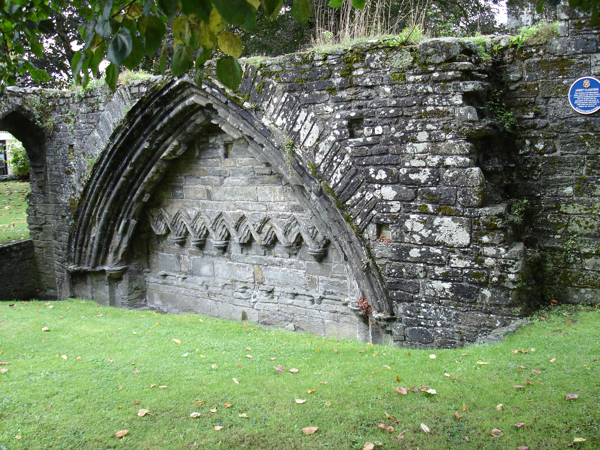

Frontline Care Observation & Comfort Boundaries
Documented practical comfort requirements from everyday dementia care practice, including headset weight limits, seated eye height, warm lighting preferences, and the need for carers to stay visually connected to what the resident sees.
OUTPUT: Care first XR design rules prioritising seated comfort, slow transitions, and shared viewing.
